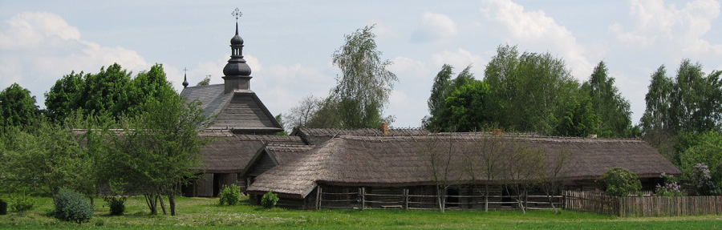
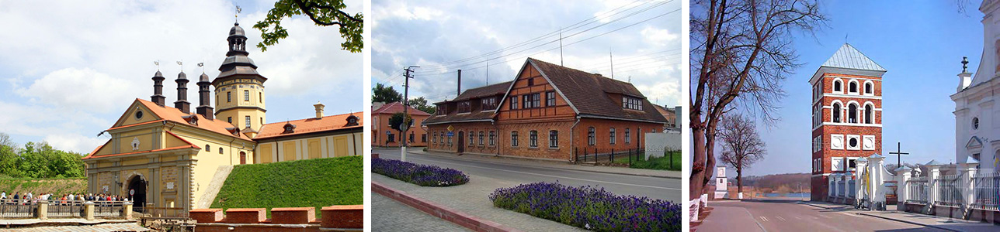
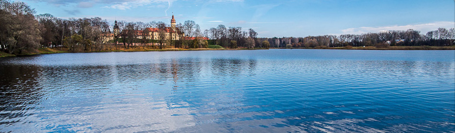

Белоруссия - самая близкая нам страна. Здесь все свободно говорят по-русски и расплачиваются рублями (правда, белорусскими). Для поездки в Беларусь не требуется виз, заграничных паспортов. И даже лететь самолетом не нужно.
И вместе с тем, Беларусь — другая страна. Когда-то, много лет назад, мы, Россия и Беларусь, начали свой независимый полет из одной точки — СССР. Теперь у нас многое по-разному. И это очень интересно посмотреть. Конечно, мы невольно сравниваем, как мы живем, как они? У них больше велодорожек, чище на улицах. У нас — выше зарплаты, больше бизнеса... Очень интересно! Многие не знают, что в Беларуси много и архитектурных достопримечательностей! Красивейшие Мирский и Несвижский замки лежат на нашем пути.
Замки? Белорусские земли входили в состав Великого княжества Литовского, Речи Посполитой, России, Советского Союза. Такая богатая история и оставила свой след в архитектуре.
Наш маршрут построен по радиальному принципу. Мы живём в Минске, куда каждый вечер возвращаемся. Получается так: днем мы колесим по интересным местам пригородов белорусской столицы, а вечером можем знакомиться с жизнью самого города.
Минск сильно пострадал во время Великой Отечественной войны. В июле 1944-го в центральной части города сохранилось всего около 70 зданий. Восстановление Минска проводилось по новому плану, предусматривающему сильное изменение структуры города. Строители возводили город-сад так, как понимали это в то время. В результате появились здания в стиле Советского ампира.
Разместившись в гостинице (у нас европейский стандарт размещения — двухместные номера с удобствами) и позавтракав, мы прокатимся по городу широких проспектов и тротуаров, многие из которых в Минске размечены, как велодорожки. Следует заметить, что по белорусским правилам дорожного движения велосипедист обязан двигаться по тротуару или велодорожке при их наличии. Если на переходе велодорожка не обозначена, необходимо спешиваться.
По дороге мы заедем в Прилукский дворцово-парковый комплекс Чапских (он пока на реставрации). Мы проедем вдоль Волковичского водохранилища («Птичь»). Совсем недалеко от мегаполиса, но тихо, ехать приятно.
Цель нашего путешествия на сегодня - посещение Белорусского государственного музея народной архитектуры и быта (Строчица). Подробнее – http://etna.by/e/russian.html. В музее собирается деревянное зодчество со всей страны, чтобы и через века люди смогли посмотреть, как жилось в деревянную эпоху.
Посмотрев музей, перекусив и отдохнув, мы возвращаемся в Минск.
В этот день мы едем довольно далеко (около 80 км), но не на велосипедах, а на электричке. Утром выезжаем от нашей гостиницы и едем до станции Столбцы. От Столбцов наш путь лежит (уже на велосипедах) по дорогам практически без трафика. По пути нам встретится музей-усадьба Якуба Коласа – выдающегося белорусского поэта, писателя, переводчика.
А также поля, коровники и силосные башни. Одна из примет Беларуси — работает все: поля возделаны, сады цветут, на пастбищах – стада.
Главная достопримечательность этого дня - город Несвиж. Мы посмотрим Несвижский дворцово-замковый комплекс (XVI-XVIII вв.) Радзивиллов, построенный итальянским архитектором Джованни Бернардони. Кроме замкового комплекса, заслуживают внимания монастырь и костел бенедиктинок (1590-1596 гг.), Ратуша (XVI в.), Фарный костел (костел иезуитов, 1584-1593 гг.), Замковая башня (XVI в.), Слуцкие ворота (Слуцкая брама, XVI-XVIII вв.), парки и озеро.
Возвращаемся к железной дороге в поселкеГородя, а оттуда - в Минск.
Вновь мы едем до станции Столбцы. Но теперь наш путь на велосипедах лежит к Мирскому замку (нач. XVI в.). С 1568-1569 года и на протяжении последующих столетий (до 1812 года) Мирский замок, как и Несвижский, принадлежал Радзивиллам. По масштабу замка видно, что жили они неплохо.
Кроме того в поселке Мир заслуживают внимания родовая усыпальница князей Святополк-Мирских в стиле модерн (1911 г.), Троицкая (Свято-Троицкая) церковь (1533-1550 гг.), Николаевский костёл (нач. XVII в.), комплекс построек синагогального двора, площадь 17 Сентября (бывшая Рыночная), парки.
Этот день посвящён Минску. Мы прокатимся по городу, по его паркам, набережным Свислочи, заедем на Троицкую горку, с сохранившейся застройкой позапрошлого века. Днем предусмотрено свободное время, который каждый сможет провести в столице Беларуси как хочет, а вечером — отъезд на поездах. Из Минска поезда ходят в Петербург, Москву, Киев, некоторые другие города.
Фото для страницы взяты с сайтов: etna.by, nesvizh-zapovednik.by, mirzamak.by
Заявиться на поход можно на странице Календарь